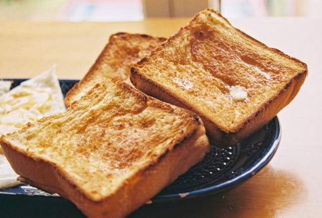

Home
French Toast

Photo on Unsplash
It's time for some French toasts!
French toast is an ideal light savory dish. It's easy and quick to make and considered an excellent snack or side
dish.
Ingredients:
(For 6 servings)
- 12 thick slices of day-old French bread or brioche
- 6 large eggs
- 1.5 cups whole milk
- 2 tablespoons all-purpose flour
- 3 tablespoons honey
- 1.5 teaspoons ground cinnamon
- 1.5 teaspoons vanilla extract
- 1 pinch of salt
- Powdered sugar or maple syrup (optional)
Steps:
- Whisk the flour, cinnamon, and salt together in a wide, shallow bowl.
- Slowly whisk in the milk and honey until the flour is completely dissolved with no lumps.
- Beat in the eggs and vanilla extract until the custard mixture is smooth.
- Soak the bread slices in the mixture for about 15 seconds per side until fully saturated.
- Cook on a buttered griddle over medium heat for 3 minutes per side until golden brown.
- Serve warm with a dusting of powdered sugar or maple syrup.